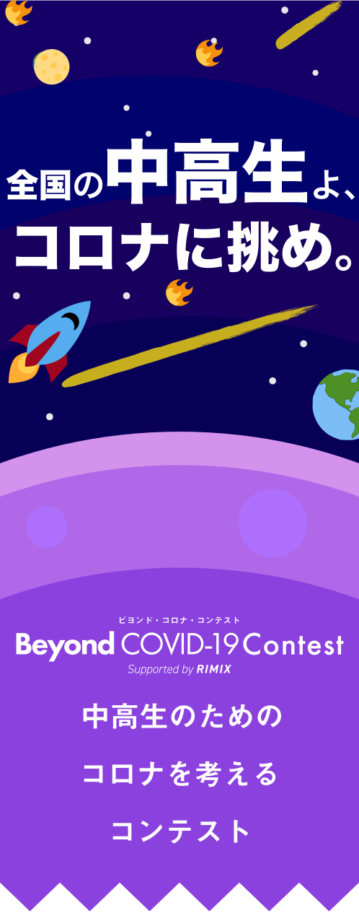

新型コロナウイルスに伴う緊急事態宣言によって多くの高校生が家にひきこもることを強いられています。
最近のコロナ生活、みなさんはどうお過ごしですか？コロナ休みには、今までできなかったことに挑戦する良絶好のチャンス！！
そんななかで新しく始めたことを募集します。新しく何かに挑戦しよう！！

新型コロナウイルスに伴う経済活動の停滞によって食品ロスが増えています。
たとえば、給食に使われている牛乳がコロナの影響で消費されなくなり、牛乳製造の人が儲からなくなって生活が苦しくなったりしています。
ですが、多くの地域も負けじと、コロナによる食品ロスの削減を目指して動いています。
この問題を少しでも解決するために、
肉・魚・果物・野菜・牛乳・おみやげなど、
コロナで困ってる食材の中から1つ以上を使って、料理しよう！!
※上記はあくまで例なので、他の食材を使ってもいいとします。
食品ロスSOS
新型コロナ経済対策サイト
#sosmapjapan
等サイトがたくさんあるので、自分の地域の食材を調べてみよう！

新型コロナウイルスによって医療従事者や感染者、濃厚接触者などの多くの人が苦しんでいます。日本各地にそのような人たちがいるのに、学生には外出自粛する以外で手伝えることは無いのでしょうか？そんなことはありません！コロナで頑張っている人たちが沢山いる今、関係者の人たちを応援するメッセージ(絵でも、写真でもいいです)を募集します。
日頃の感謝、応援メッセージ、元気付ける写真や絵など、種類は問いません！